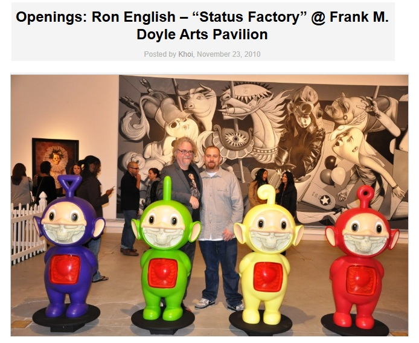

Exhibitions
POWER PATHOS, Station Museum of Contemporary Art, Houston, Texas, US, June 21–September 24, 2006.
Big Picture Pop, Opera Gallery, New York, New York, US, November 29–December 20, 2007.
Status Factory – The Art of Ron English, Frank M. Doyle Arts Pavilion (Orange Coast College), Costa Mesa, California, US, November 12–December 17, 2010.
Ron English – You Are Not Here, International Museum of Art & Science (IMAS), McAllen, Texas, US, March 31–August 14, 2011.
Guernica, Allouche Gallery, New York, New York, US, September 23–October 19, 2016.
Reimagining “Guernica” / La réinvention du “Guernica”, Museo de la Paz de Gernika, Gernika-Lumo, Bizkaia, Spain, April 4–December 10, 2017.
Literature
Ron English, Abject Expressionism: The Art of Ron English (San Francisco: Last Gasp, 2007), p. 75. ISBN 978-0867196894.
Ron English, Son of Pop: Ron English Paints His Progeny (San Francisco, California: 9mm Books and The Shooting Gallery, 2007), p. 87. ISBN 978-0976632511.
Don Goede (ed.), Abraham Obama: A Guerrilla Tour Through Art and Politics (San Francisco: Last Gasp, 2009), p. 14. ISBN 978-0867197228.
Ron English, Death and the Eternal Forever (Korero Press, 2014), p. 150. ISBN 978-0957664920.
Ron English, Original Grin: The Art of Ron English (Paris: Cernunnos, 2019), p. 230. ISBN 978-2374950938.
Notes
The work is reproduced in the exhibition catalogue for Big Picture Pop.
It is also reproduced in the printed POWER PATHOS exhibition catalogue.
It also appears in the Museo de la Paz de Gernika’s digital exhibition catalogue / flip-book, available here, accessed April 5, 2026.
Arrested Motion also documented the painting in its opening and exhibition photographs for Ron English’s Status Factory – The Art of Ron English at Frank M. Doyle Arts Pavilion, available here, accessed April 14, 2026.
A later REMEMCHILD digital-memory-platform entry on the 2017 exhibition likewise records the work, available here, accessed April 23, 2026.
This composition was later adapted by the artist as a related giclée print on Somerset Enhanced Radiant White Satin 330gsm paper issued as Grade School Guernica; the cited Art Collectorz page describes the print as measuring 100 × 49 cm (39.4 × 19.3 inches), published by Lazarides Editions in an edition of 95. See the related print on Art Collectorz.

The image was also issued as a postcard by the Museo de la Paz de Gernika shop in connection with the 2017 exhibition, available here, accessed April 23, 2026.
In Original Grin, this work was erroneously reported as 12 × 27 inches.
The composition references Pablo Picasso’s Guernica.

According to the printed POWER PATHOS exhibition catalogue, Ron English worked at the Station Museum in the weeks prior to the opening to produce this painting.
This image was later used for VeVe’s Grade School Guernica 2022 digital collectible, available here, accessed April 16, 2026.
Ancillary Documentation
The following documentation includes catalogue reproductions, exhibition-photo records, museum and project webpages, and a photograph of Ron English with the painting.


